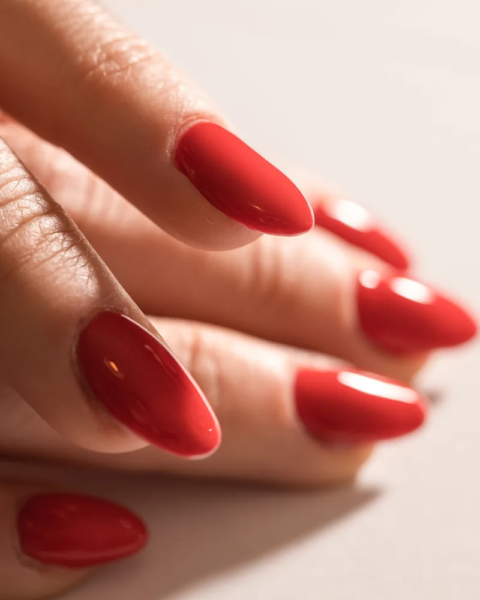
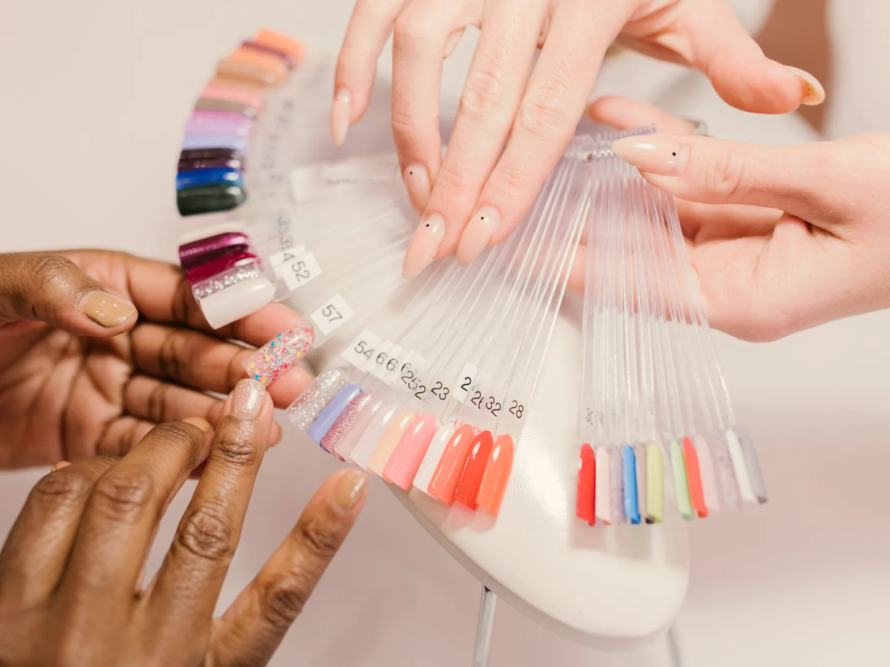
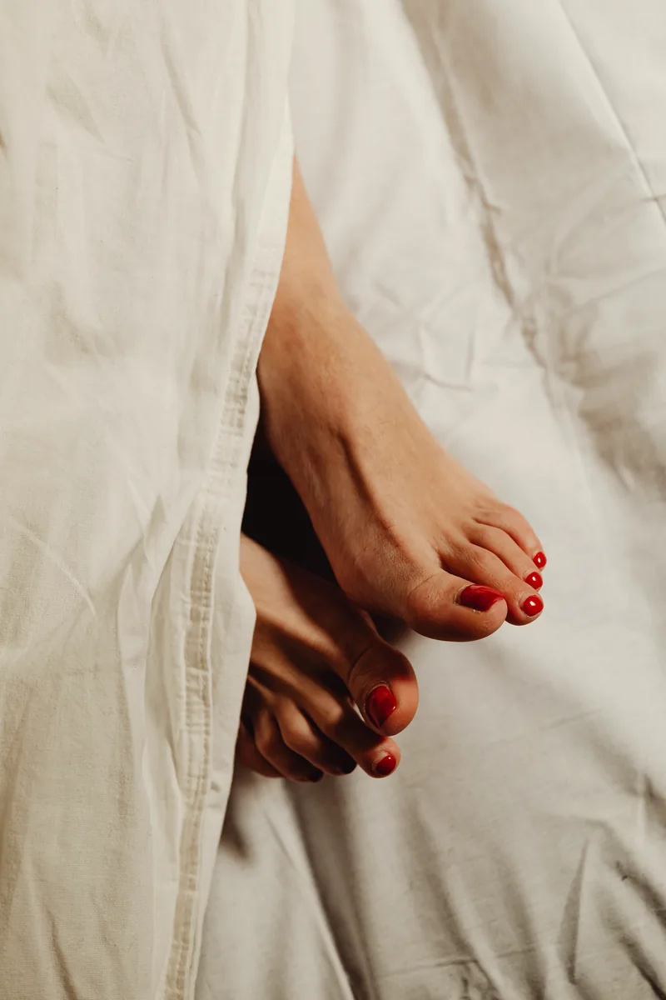
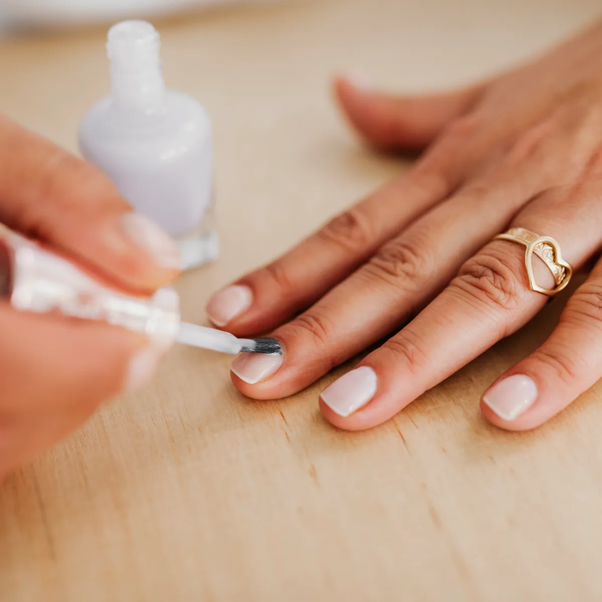
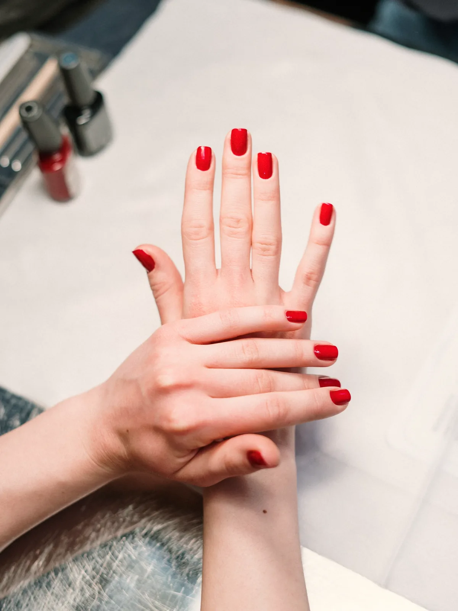
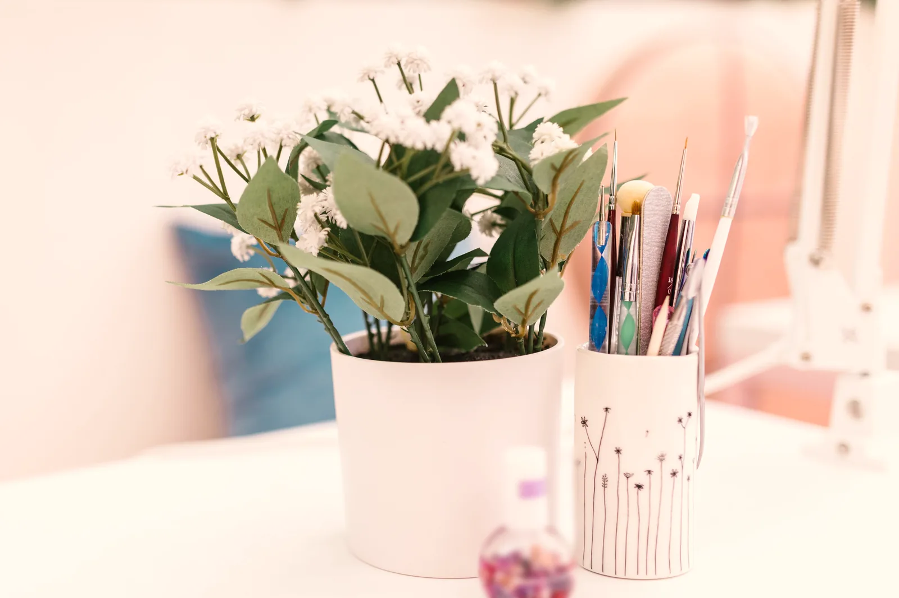

Šípka

Nechtový a kozmetický salón v Leviciach. Gélové nechty, manikúra, pedikúra, pleť a mihalnice, vždy na objednaný čas.
Otváracie hodiny nájdete nižšie
Cenník
Pri každej službe vidíte cenu aj to, ako dlho u nás budete. Zdobenie nechtov a kamienky doladíme na mieste podľa toho, čo si vyberiete.
Ceny platia od 1. 11. 2026. Platiť môžete v hotovosti aj kartou. Ak termín nestihnete, dajte vedieť aspoň deň vopred.
Nechty
Gélové nechty, nová modeláž
40 €
Tvar a dĺžku vyberiete spolu s nami, farba zo vzorkovníka je v cene. 2 h 30 min
Doplnenie gélových nechtov
30 €
Po troch až štyroch týždňoch, vrátane novej farby. 2 h
Gél lak na prírodné nechty
30 €
S manikúrou, drží zvyčajne dva až tri týždne. 1 h 15 min
Klasická manikúra
20 €
Tvar nechtov, kožička, výživa a masáž rúk, bez laku. 45 min
Odstránenie gélu
15 €
Šetrne, bez brúsenia do prírodného nechtu. 30 min
Nohy
Mokrá pedikúra
30 €
Kúpeľ, nechty, kožička, päty a krém. 1 h
Pedikúra s gél lakom
40 €
Celá pedikúra a farba, ktorá vydrží celé leto aj dovolenku. 1 h 30 min
Pleť
Hĺbkové čistenie pleti
35 €
Odlíčenie, peeling, čistenie a upokojujúca maska. 1 h
Kompletné ošetrenie pleti
50 €
Čistenie, sérum podľa typu pleti, masáž tváre a dekoltu, maska. 1 h 30 min
Mihalnice
Lash lifting (laminácia mihalníc)
35 €
Natočenie a farba vlastných mihalníc, drží šesť až osem týždňov. 1 h
Predĺženie mihalníc, nová sada
50 €
Klasika jedna na jednu alebo objem, poradíme podľa vašich mihalníc. 2 h
Doplnenie mihalníc
35 €
Do troch týždňov od poslednej návštevy. 1 h 15 min
Vzorkovník
Farbu si vyberiete pri stolíku z celého vzorkovníka gél lakov. Tu je pár odtieňov, ktoré máme tento mesiac najradšej. Ťuknite na jeden a hneď uvidíte, ako vám pristane.
Z nášho salónu




O nás
Sme dve a pracujeme len na objednávku, takže u nás nikto nečaká v rade.
Šípku sme otvorili v roku 2019 v tichom dvore kúsok od centra Levíc. Lucia robí nechty a pedikúru, Zuzana sa stará o pleť a mihalnice. Ak neviete, čo si vybrať, napíšte nám pár slov a poradíme ešte pred návštevou.
-
Čisté nástroje pre každú klientkuKovové nástroje sterilizujeme v autokláve, pilníky a bloky sú na jedno použitie.
-
Povieme vám aj to, čo neurobímeKeď necht potrebuje pauzu od gélu, odporučíme radšej výživu.
-
Darčekové poukážkyNa konkrétnu službu alebo na sumu, ktorú si určíte. Pripravíme ich do dvoch dní.

Hodiny a cesta
Otváracie hodiny
| Pondelokdnes | 9:00 až 18:00 |
|---|---|
| Utorokdnes | 8:00 až 18:00 |
| Stredadnes | 8:00 až 18:00 |
| Štvrtokdnes | 10:00 až 19:00 |
| Piatokdnes | 8:00 až 16:00 |
| Sobotadnes | 8:00 až 12:00 |
| Nedeľadnes | zatvorené |
Vo štvrtok do siedmej, aby ste stihli prísť aj po práci.
Kde nás nájdete
Ilustračná mapa, nie v mierke. Ulica Ružový dvor je vymyslená, Levice sú skutočné.
Ružový dvor 4 934 01 Levice Vchod do dvora z bočnej ulice, prízemie bez schodov. Parkovanie zadarmo pri vchode.Navigovať otvorí mapy len s mestom Levice. Na vašom webe povedie na presnú adresu.
Telefón: 0XX XXX XXX (vymyslené číslo)